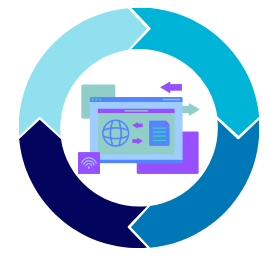

Es un método que se especifica en trabajos con requisitos muy básicos y no detallados que tiene cambios recurrentemente y los roles de este método no están totalmente definidos, ya que pueden variar dependiendo el trabajo.
Las fases del modelo son bastante sencillas:
Pero lo que hace de espira una metodología ágil es la forma de trabajo que representada en una imagen es, efectivamente, un espiral
Como se mencionó anteriormente, los roles en espiral pueden variar dependiendo el proyecto, pero si hay una base que se debe seguir a la hora de asignarlos, y esa base es:
Como los roles pueden ser diferentes, es posible que dentro del equipo de desarrollo no se incluya un equipo de diseño, o dentro del investigador no sea necesario un analista, etc.
